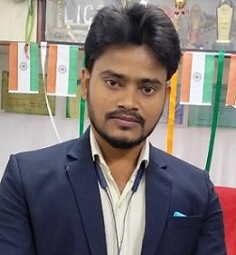
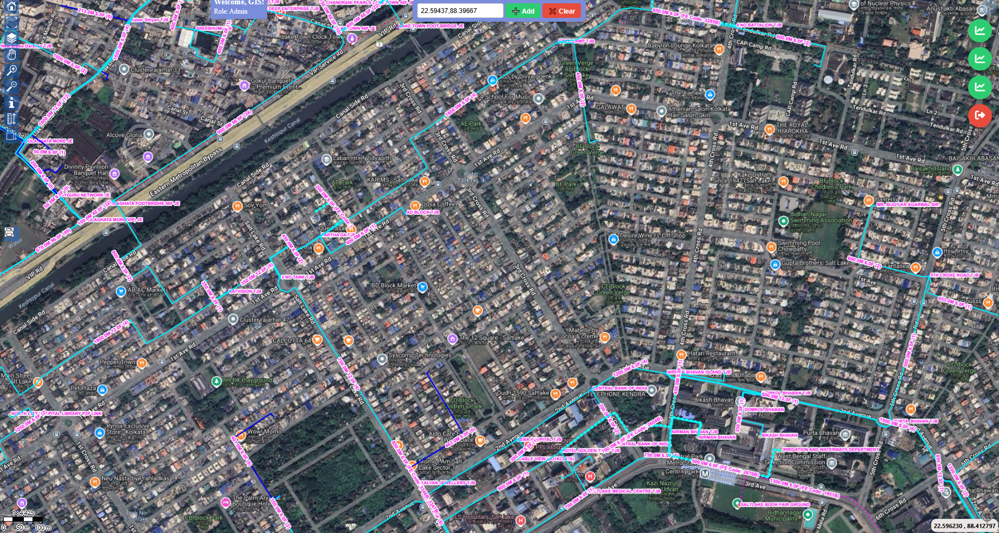
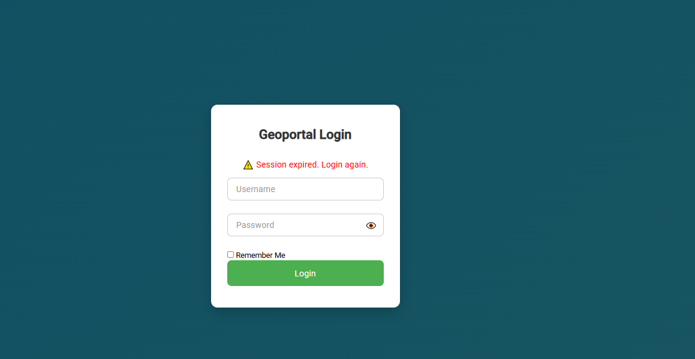
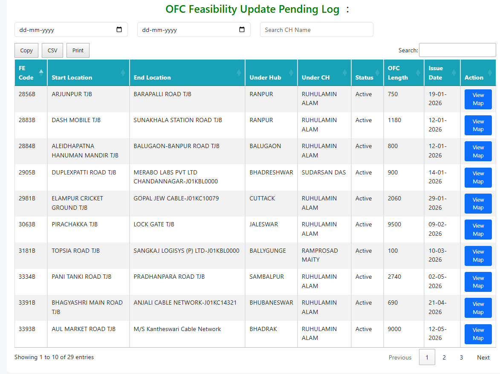
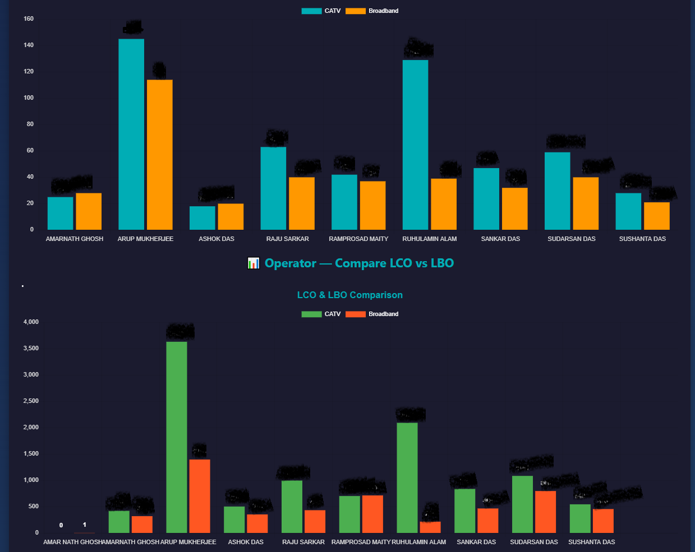

About Me
GIS Analyst highly skilled at improving productivity through creating and implementing more efficient work processes. Organized, meticulous and adaptable GIS Analyst with 9 years 5 Months of experience in data management, mapping, analysis, training and management of geo graphic information systems.These skills and experience make for an exceptional team player focuse on adding value any enterprise..
GIS || Remote Sensing
- ArcGIS software, ArcGIS Online, ArcGIS Pro
- QGIS, Qfield application, Qfield Sync, QGIS Cloud, Qfield Cloud & Global Mapper
- Map Info, PCI Geomatica, Global Mapper, Geosetter, ERDAS Imagine
- Google Earth Pro, Earth Explorer
Development
- HHTML, CSS, JavaScript, Bootstrap
- Geo Server, Map Server, GeoMoose, GIS Cloud, Openlayer, Leaflet
- PHP, Postgres SQL, Post GIS
Survey
- QGIS Cloud, Geo-Portal
- Using API
- Geo-Portal
- Geo-Portal
Advance WebGIS Implimentation Certificate No.
0000000000
Languages
English, Bengali, Hindi
Cricket · Cricket
Work Experience
Sr. GIS Analyst
Key Projects:
-OFC Network (60k-km)
Role: Sr. GIS Executive
-GTPL KCBPL
Role: WebGIS
-Utility and Network analysis
Role: GIS Executive & Data Processing
Jr. Data Analyst (GIS)
Key Projects:
-“WBPHED Rural Development and Waste Water Treatment”
Role: QA & QC
-Spatial Feature Digitization (Base Map)
Role: Layout making(pre & post survey)
GIS Others
Key Projects:
Digitization & Updating of Cadastral Map of West Bengal.
Role: Digitizer & Updation
Academic Background
P.G. in Geography (2022)
Applied GIS & Remote Sensing
Rabindra Bharati University
68.4%(1st )
WebGIS (2019)
Advance Web GIS Implimentation
Jadavpur University
82%(1st class 1st)
P.G. Diploma (2016)
Applied GIS & Remote Sensing
Jadavpur University
68.93%(1st)
B.Sc. Geography (Hons) (2011)
University of Calcutta | 68.46%
Higher Secondary (2008)
W.B.C.H.S.E | 67.20%(1st)
Secondary (2006)
W.B.B.S.E | 63.25%(1st)
Licenses & Certifications
aaaaa

Will updated |Will update/p>
aaaaa

Will update
aaaaaa

Will update
Projects
Fiber Network Diagram and maintainance (50K-km)
Geospatial data collection using Geo Portal(Database) & Field data Survey.
WBPHED Rural Development and Waste Water Treatment(West Bengal)
Digitized large-scale scanned satellite map using QGIS 3.14 and ArcMap 10.8.
Sajal Dhara
Prepare database and verify the existing database of spatial features in QGIS.
Field & Gallery

Geo Portal

Enterprise GIS

Dynamics Data Analysis

Dynamics Web Chart
Let’s Connect
gisexplorer.arun@gmail.com
+91 8509552691 / +91 6292237407
Sonarpur, Kolkata, West Bengal, India
Available for Geospatial roles.
Open to WebGIS Mapping and Open Source Enterprise GIS development.